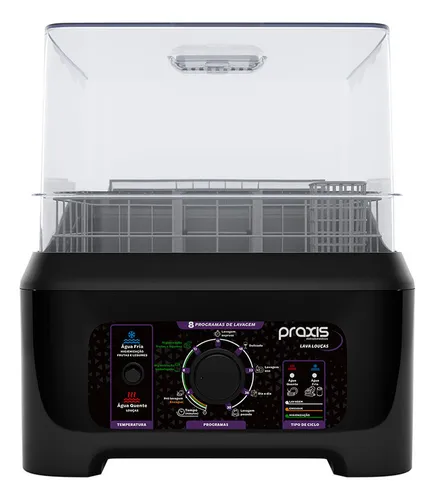

MAIS VENDIDO
10º em Lava louças
Lava louças portátil Praxis cor preto
★★★★★
+6 mil vendidos

MEGA OFERTA
de R$ 999,90
por R$ 499,90
Promoção válida para pagamento via Pix
Descrição do produto
Lava Louças Portátil Praxis 8 Programas – 3 Litros
Transforme sua cozinha com a Lava Louças Portátil Praxis, uma solução moderna, compacta e eficiente para facilitar seu dia a dia. Com 8 programas de lavagem e capacidade para até 3 litros, ela é ideal para quem busca praticidade sem abrir mão da tecnologia.
Inovação e tecnologia de ponta
- Pré-Lavagem: remove os resíduos mais difíceis antes da lavagem principal.
- Lavagem Express: ideal para limpeza rápida em momentos de pressa.
- Delicado: cuida de louças mais frágeis com total segurança.
- Lavagem ECO: economia de água e energia com eficiência máxima.
- Dia a Dia: limpeza prática e completa para uso diário.
- Lavagem Pesada: potência ideal para sujeiras difíceis e gorduras.
- Higienização de Embalagens: segurança para latas e Tetrapak.
- Higienização de Frutas e Legumes: alimentos limpos e livres de contaminantes.
Recursos que fazem a diferença
- Água quente: lava as louças profundamente e elimina germes e bactérias.
- Ciclo rápido de 30 minutos: louça limpa em tempo recorde.
- Fácil instalação: não precisa de encanamento, apenas uma tomada elétrica.
- Design moderno: elegante e discreto, combina com qualquer cozinha.
Características do produto
- Modelo: Lava Louça Praxis LPP04
- Potência: 1200W
- Reservatório: 3 litros
- Consumo de água: apenas 2,5 litros por lavagem
- Alimentação: disponível nas voltagens 127V (EAN 7899650331175) e 220V (EAN 7899650331182)
- Ciclos: lavagem, enxágue e higienização
- Abertura: superior
- Itens inclusos: Copo medidor e jarra de abastecimento
- Funções especiais: higienização de alimentos e frutas com água fria; louças com água quente
Dimensões
- Altura: 47,1 cm
- Largura: 34,7 cm
- Profundidade: 47,2 cm
- Peso: 5,94 kg
Observação: Produto só liga com 3 litros de água no reservatório. Categoria de eficiência energética A.